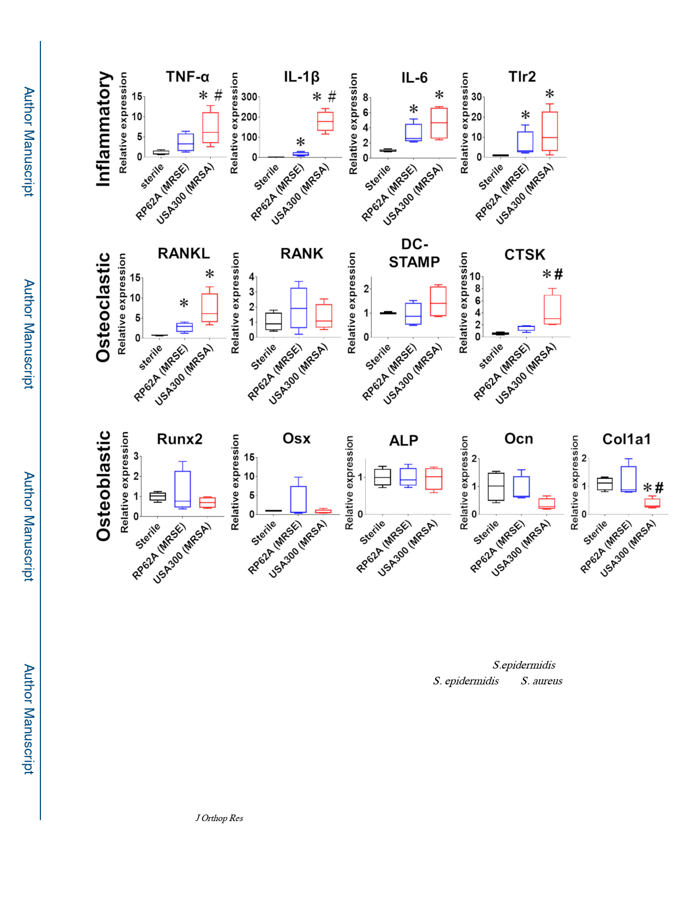

Tomizawa et al.
Page 18
Figure 6. Proinflammatory transcriptome in RP62A infected tibiae.
Mice (n=4) were challenged with a transtibial implant containing no bacteria (Sterile),
1.6×105 CFU of RP62A, or 2.1×105 CFU of USA300, euthanized on day 14, and their tibiae
were process for qPCR. Relative gene expression data are presented as the fold change from
Sterile control with the mean ± SD (*p < 0.05 vs. Sterile, ♯p < 0.05 vs S.epidermidis). Of
note is that there were no significant differences between S. epidermidis and S. aureus, and
no differences between groups in most osteoblastic gene expression.
J Orthop Res. Author manuscript; available in PMC 2021 April 01.